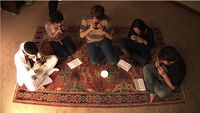
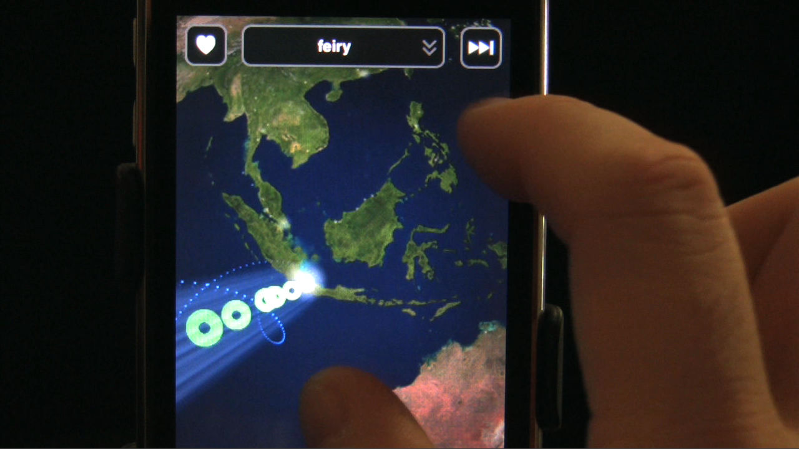
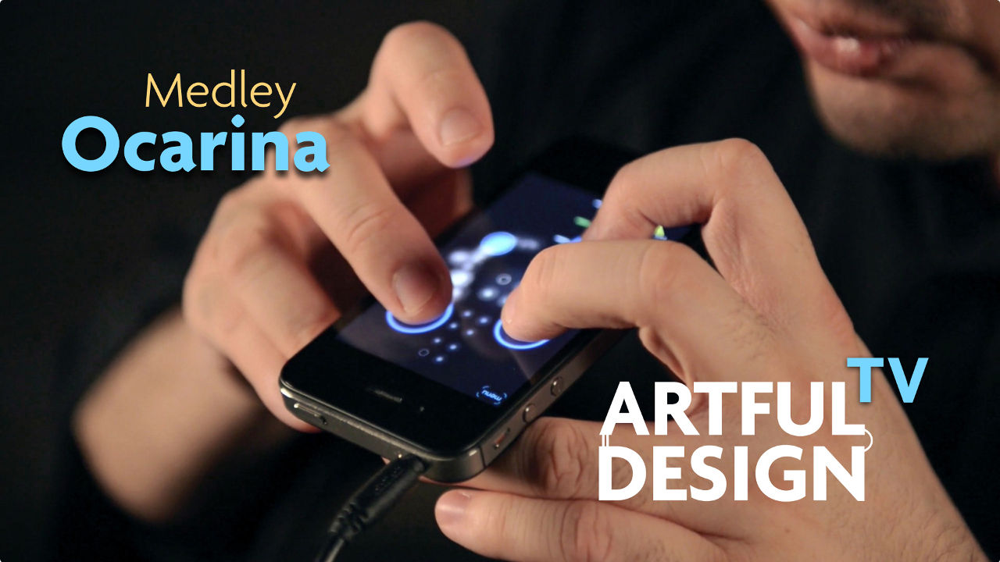
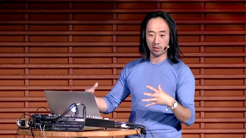
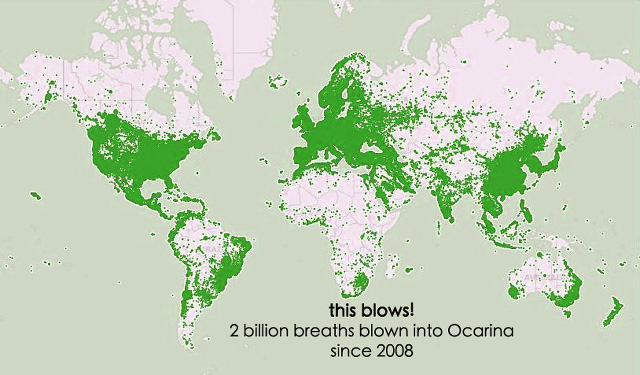

OCARINA: DESIGNING THE IPHONE'S MAGIC FLUTE
Ocarina transforms the iPhone into an ancient flute-like instrument that responds to your breath, touch, and movements. Created in 2008, it was one of the very first mobile/social musical instruments; its globe visualizes where people are playing Ocarina and even lets users listen in on each other. It went on to be one of Apple's Hall of Fame apps and currently has more than 10 millions of users, who have since 2008 expended 2 billion breathes blowing into their iPhones (see map below) and have listened to each other 47 millions times in the globe! The vision was and remains to bring the joy of music-making to as many people as possible, and to connect the world more through music (with a little help from technology).
Read "Ocarina" Excerpt from Artful Design
Computer Music Journal article on Ocarina
Wang, G. 2014.
"Ocarina: Designing the iPhone's Magic Flute."
Computer Music Journal. 38(2):8-21.

|
Legend of Zelda Theme (on iPhone Ocarina)
video | by Ge Wang + Tanya Sleiman November 2008 | Vimeo | YouTube | .mov This was the original release video for Ocarina in 2008. It went viral "dude blows into iPhone to play Legend of Zelda", helping to propel Ocarina to a #1 selling app in the United States and in 21 countries around the world. | |
|  |
Stairway to Heaven intro (for guitar and five iPhones)
video | by Ge Wang November 2008 | Vimeo | YouTube | .mov This video, initially created to reach a potentially different generation of iPhone users, spawned the notion of "dirty iPhone hippies"... | |
|  |
Ocarina: Listening to the World
video | by Ge Wang Fall 2008 | Vimeo | YouTube June 2020 | YouTube (one hour of listening to the World play Ocarina) The Globe visualization in Ocarina. Listening to people blow into their phones from around the world. Who are they? | |
|  |
Ocarina 2 Medley
video | by Ge Wang + Turner Kirk (with Andrew Briggs) Spring 2012 | Vimeo | YouTube A short medley on Ocarina 2, including Clair de Lune, Legend of Zelda,, and Ennio Morricone's "The Good, the Bad, and the Ugly". | |
 |
So Many iPhone Apps, So Little Time
New York Times | by David Pogue March 2009 | online "It's one of the most magical programs I've ever seen for the iPhone, and probably for any computer. It's Ocarina, named after the ancient clay wind instrument." |
|
|  |
"The DIY Orchestra of the Future"
A talk by Ge Wang May 2014 | TED.com | .mp4 This TED talk tells a story that starts from a computer music programming language (ChucK), to laptop orchestra, to Ocarina, and a new social dimension of music-making... |

distribution of breaths blown into Ocarina
Read "Ocarina" Excerpt from Artful Design